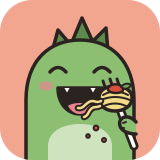

Rezepte werden geladen …
Alle Familienrezepte an einem Ort, auf jedem Gerät. Jedes Rezept lässt sich als DIN-A4-Rezeptkarte exportieren.

Rezepte werden geladen …
Rezeptkarten-PDFs im NomNomZilla-Layout werden direkt übernommen, ganz ohne Internet. Ein einzelnes Rezept kannst du vor dem Speichern prüfen, mehrere landen direkt im Buch.
… oder Text einfügen